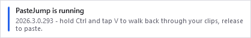
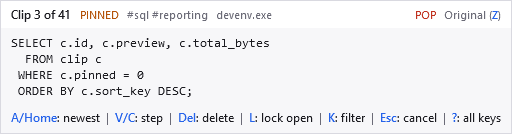

Getting started
Download, unzip, run. There is nothing to install and nothing to configure first.
Which download to take
Every release offers the same program in two shapes. They differ only in whether the .NET runtime travels with it:
| File | What is in it | Needs |
|---|---|---|
…-win-x64-unpacked.zip |
Take this one unless you have a reason not to. The whole program with the .NET runtime beside it, plus the manual, the licence and a readme. Nothing to install. | Nothing |
…-win-x64-net10.zip |
PasteJump's own files only, 15 of them, about 3 MB. The shape where a .NET security update reaches PasteJump from Windows rather than from a new release. | The .NET 10 Desktop Runtime |
There used to be a single-file …-win-x64.zip, and it was retired deliberately. One
PasteJump.exe was the nicer thing to download, and it spent about a second of every warm
launch unpacking itself before any of PasteJump's own code ran — roughly 1.3 s against 0.3 s — on
a program that starts when you sign in and then runs all day. It was not even smaller, since a single-file
bundle is already compressed. If you still have one, unzip the archive above over it or beside it; your
data folder is untouched either way.
Windows 10 or 11, 64-bit. There is no 32-bit build and no installer.
First run
Unzip it wherever you like and run PasteJump.exe. Nothing is written outside the
folder you unzipped into, unless you move the data location yourself.
Windows will warn you the first time. The builds are not signed with a paid certificate, so SmartScreen reports an unknown publisher: choose More info, then Run anyway. Every release publishes a SHA256 for each file if you want to check what you downloaded against it.
There is no main window, and that is not a failure to start. It says so instead, briefly, in the corner:

The version you are running and the chord to paste with. It never takes focus, so it cannot interrupt what you are typing. How often it appears is yours to choose — see The tray icon.
PasteJump then puts an icon in the notification area next to the clock and waits. If you cannot see it, Windows has probably hidden it behind the Show hidden icons arrow — drag it out onto the taskbar once and it stays. See The tray icon.
The first thing to try
- Copy two or three different things, in the ordinary way —
Ctrl+Cin any program. - Click into somewhere you can type.
- Hold
Ctrland tapVtwice. An overlay appears showing the clip one back from the newest. - Keep
Ctrlheld and tapVagain to walk further back. - Release
Ctrl. That clip is pasted.

What you see at step 3: the clip about to be pasted, where it sits in the stack, and the keys available
while Ctrl is still held.
One tap of V with Ctrl held is an ordinary paste, exactly as before, so the
chord you already use has not changed meaning. The overlay only appears from the second tap onwards.
Esc cancels while the overlay is up and pastes nothing.
The gesture is the one page worth reading in full — everything else in this
manual supports what is on it.
Where your clips are kept
In a data folder beside the executable, so a copy on a USB stick carries its own
history, and deleting the folder PasteJump lives in takes the history with it. If the program folder is not
writable — which is what unzipping under C:\Program Files means in practice — choose
a different location under Settings, System. Clips and history explains the
two places what you copy is kept, which is the easiest thing here to confuse.
Starting it with Windows
Use the tray menu's Run at Startup rather than putting a shortcut in the Startup folder. It registers a scheduled task, and that is also what makes Always Run as Administrator possible without a UAC prompt at every sign-in. Both are ticked items in the menu, so they answer the question as well as setting it — see The tray icon.
Coming from Clipjump
PasteJump can bring an existing Clipjump history and clip stack across, and it offers to do that on a first run if it finds an installation. It can also be done later, from Settings, History. See Importing from Clipjump.